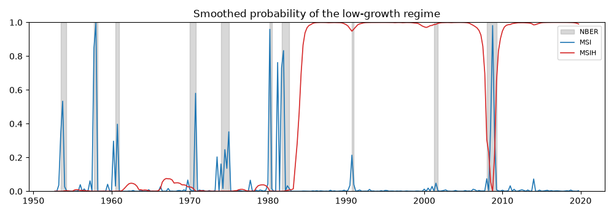
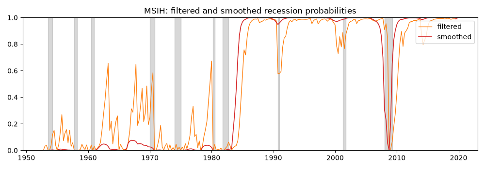

Note
Go to the end to download the full example code.
Business-cycle regimes: Markov switching against the NBER chronology#
Hamilton (1989) modelled quarterly GNP growth as an autoregression whose intercept switches between two unobserved regimes governed by a Markov chain, and found that the smoothed regime probabilities trace the NBER recession dates with no business-cycle information supplied to the model. The exercise has become the standard test of a regime-switching estimator, and the NBER chronology is on FRED, so it can be run with no hand-entered dates.
This example fits Hamilton’s specification and two extensions to real GDP growth, compares them by likelihood and by their agreement with the NBER indicator, and then estimates a two-variable Markov-switching VAR on monthly data where the recession regime shows up in the covariance as much as in the mean.
Data#
Quarterly real GDP growth, continuously compounded and in percent,
and the NBER recession indicator USRECQ, 1952 to 2019. Hamilton’s
sample ended in 1984; the longer sample includes the Great Moderation,
which is what motivates letting the variance switch.
import matplotlib.pyplot as plt
import numpy as np
from cultivars.multivariate.regime_switching.markov_switching import MarkovSwitchingVAR
from cultivars.univariate.regime_switching import MarkovSwitchingAR
from _fred import fetch
quarterly = fetch(
{"growth": "GDPC1", "nber": "USRECQ"},
start="1951-10-01",
end="2019-12-01",
frequency="q",
aggregation_method="avg",
units={"growth": "cch"},
)
growth = quarterly["growth"].to_numpy()
nber = quarterly["nber"].to_numpy() > 0.5
print(f"{len(growth)} quarters, {int(nber.sum())} of them NBER recession quarters")
273 quarters, 37 of them NBER recession quarters
Three specifications#
Hamilton’s MSI(2)-AR(4): the intercept switches, the autoregressive coefficients and the variance do not. The MSIH variant lets the variance switch as well; the MSIAH variant lets everything switch. All three are estimated by EM from several random starts, and the regimes are labelled by ascending intercept, so regime 0 is always the low-growth state.
order = 4
hamilton = MarkovSwitchingAR(
growth, order=order, switching_mean=True, switching_variance=False
).fit(seed=1)
msih = MarkovSwitchingAR(growth, order=order, switching_mean=True, switching_variance=True).fit(
seed=1
)
msiah = MarkovSwitchingAR(
growth, order=order, switching_mean=True, switching_variance=True, switching_ar=True
).fit(seed=1)
print(hamilton.summary())
print(hamilton.compare(msih, msiah, criterion="bic"))
MSI(2)-AR(4) Results
================================================================================
Model: MSI(2)-AR(4) Log-likelihood: -321.903
Regimes: 2 AIC: 661.805
EM iterations: 9 BIC: 694.157
Converged: True HQIC: 674.798
Observations: 269 Entropy: 0.089
--------------------------------------------------------------------------------
coef
const[0] -1.2661
ar.L1[0] 0.2669
ar.L2[0] 0.1180
ar.L3[0] -0.0814
ar.L4[0] -0.0558
const[1] 0.6507
ar.L1[1] 0.2669
ar.L2[1] 0.1180
ar.L3[1] -0.0814
ar.L4[1] -0.0558
sigma2[0] 0.5197
sigma2[1] 0.5197
p[0->0] 0.2607
p[0->1] 0.7393
p[1->0] 0.0335
p[1->1] 0.9665
================================================================================
Regimes ordered by ascending intercept; the likelihood is invariant to
relabelling, so that convention is what makes 'regime 0' mean anything.
Mean posterior entropy 0.089 of 1 (well separated regimes); expected durations [
1.4 29.8] periods.
Regime-wise stationary: True. This is sufficient but not necessary: a rarely
visited explosive regime still leaves the switching process stationary.
Transition rows sum to one, so only K(K-1) of the reported p[i->j] are free; the
parameter count reflects that.
The number of regimes cannot be tested by a likelihood ratio; see
likelihood_ratio_test.
Standard errors are not yet available for this estimator.
Model comparison by BIC
================================================================================
Observations: 269 Models: 3
--------------------------------------------------------------------------------
model llf k BIC dBIC
MSIH(2)-AR(4) -293.263 10 642.473 0.000
MSIAH(2)-AR(4) -284.572 14 647.471 4.998
MSI(2)-AR(4) -321.903 9 694.157 51.684
================================================================================
Ranked best-first; the final column is the gap to the best model.
A likelihood-ratio test of the variance restriction#
The number of regimes cannot be tested by a likelihood ratio: under the null the transition probabilities are unidentified (the Davies problem). The equal-variance restriction, with the regime count held fixed, is a regular nested hypothesis and the test is valid.
print(hamilton.likelihood_ratio_test(msih).summary())
Likelihood-Ratio Test
================================================================================
Verdict at 5%: reject
--------------------------------------------------------------------------------
null statistic df p-value
nested restriction 57.2791 1 0.0000
================================================================================
Regime characteristics#
The regime table reports each regime’s intercept and variance, its ergodic probability, its expected duration in quarters and the share of the sample the smoothed probabilities assign to it. Hamilton’s estimates were a recession lasting about four quarters and an expansion lasting about ten.
print(msih.regime_table())
print(msih.transition_table())
MSIH(2)-AR(4) regimes
================================================================================
Ordering: ascending intercept Observations: 269
--------------------------------------------------------------------------------
regime const sigma2 ergodic duration share
0 0.4615 0.2011 0.6390 93.56 0.5155
1 0.4958 1.1791 0.3610 52.85 0.4845
================================================================================
'ergodic' is the stationary probability implied by the transition matrix;
'share' is the average smoothed probability actually observed. 'duration' is 1 /
(1 - P_jj), in periods.
MSIH(2)-AR(4) transition matrix
================================================================================
Regimes: 2
--------------------------------------------------------------------------------
from \ to 0 1
0 0.9893 0.0107
1 0.0189 0.9811
================================================================================
Rows sum to one, so K(K-1) of the K**2 entries are free.
Agreement with the NBER chronology#
The smoothed probability of regime 0 is compared with the NBER indicator, aligned on the effective sample. Two summaries: the quadratic probability score, the Brier score of the regime probability as a recession forecast, and the concordance of the most-likely regime with the chronology.
effective = quarterly.index[order:]
nber_effective = nber[order:]
def agreement(result: object, label: str) -> None:
"""Print quadratic probability score and concordance against NBER."""
probability = result.probabilities("smoothed")[:, 0]
qps = float(np.mean((probability - nber_effective) ** 2))
concordance = float(np.mean((probability > 0.5) == nber_effective))
print(f"{label:10s} QPS {qps:.3f} concordance {100 * concordance:5.1f}%")
for label, result in (("MSI", hamilton), ("MSIH", msih), ("MSIAH", msiah)):
agreement(result, label)
fig, ax = plt.subplots(figsize=(10, 3.5))
ax.fill_between(effective, 0, 1, where=nber_effective, color="grey", alpha=0.3, label="NBER")
ax.plot(effective, hamilton.probabilities("smoothed")[:, 0], color="C0", lw=1.2, label="MSI")
ax.plot(effective, msih.probabilities("smoothed")[:, 0], color="C3", lw=1.2, label="MSIH")
ax.set_ylim(0, 1)
ax.set_title("Smoothed probability of the low-growth regime")
ax.legend(loc="upper right", fontsize=8)
fig.tight_layout()

MSI QPS 0.094 concordance 88.8%
MSIH QPS 0.587 concordance 39.4%
MSIAH QPS 0.844 concordance 15.6%
Filtered versus smoothed#
The smoothed probabilities use the whole sample and are what a historian wants; the filtered probabilities use data up to each date and are what a forecaster had. The gap between them at the start of each recession is the recognition lag of a real-time regime call.
filtered = msih.probabilities("filtered")[:, 0]
smoothed = msih.probabilities("smoothed")[:, 0]
fig, ax = plt.subplots(figsize=(10, 3.5))
ax.fill_between(effective, 0, 1, where=nber_effective, color="grey", alpha=0.3)
ax.plot(effective, filtered, color="C1", lw=1.0, label="filtered")
ax.plot(effective, smoothed, color="C3", lw=1.2, label="smoothed")
ax.set_ylim(0, 1)
ax.set_title("MSIH: filtered and smoothed recession probabilities")
ax.legend(loc="upper right")
fig.tight_layout()

A Markov-switching VAR on monthly data#
Industrial production growth and the change in the unemployment rate, monthly 1960-2019, with the intercepts and the innovation covariance switching. The recession regime in a bivariate system is a state of falling output, rising unemployment and a larger, more negatively correlated covariance; the regime table reports the log-determinant of each regime’s covariance and the largest root of its dynamics.
monthly = fetch(
{"ip": "INDPRO", "u": "UNRATE", "nber": "USREC"},
start="1959-10-01",
end="2019-12-01",
units={"ip": "cch", "u": "chg"},
)
names = ("ip", "du")
msvar = MarkovSwitchingVAR(
monthly[["ip", "u"]].to_numpy(),
order=2,
n_regimes=2,
switching_mean=True,
switching_variance=True,
names=names,
).fit(seed=1)
print(msvar.regime_table())
for index in range(msvar.n_regimes):
regime = msvar.regime(index)
print(f"regime {index}: intercepts {np.round(regime.deterministic[0], 3)}")
print(f" innovation covariance\n{np.round(regime.sigma_u, 4)}")
nber_monthly = monthly["nber"].to_numpy()[msvar.order :] > 0.5
probability = msvar.probabilities("smoothed")[:, 0]
qps = float(np.mean((probability - nber_monthly) ** 2))
concordance = float(np.mean((probability > 0.5) == nber_monthly))
print(f"MS-VAR QPS {qps:.3f} concordance {100 * concordance:5.1f}%")
MSIH(2)-VAR(2) regimes
==================================================================================================
Ordering: ascending first-variable intercept Observations: 721
--------------------------------------------------------------------------------------------------
regime log|Sigma| max |root| ergodic duration share
0 -2.5106 0.5950 0.1652 5.00 0.1696
1 -5.4375 0.5950 0.8348 25.24 0.8304
==================================================================================================
'ergodic' is the stationary probability implied by the transition matrix; 'share' is the average
smoothed probability actually realized in this sample.
regime 0: intercepts [0.107 0.075]
innovation covariance
[[ 1.8987 -0.1519]
[-0.1519 0.0549]]
regime 1: intercepts [0.149 0.005]
innovation covariance
[[ 0.2311 -0.0144]
[-0.0144 0.0197]]
MS-VAR QPS 0.121 concordance 85.3%
What to take away#
The regime-switching model is not told where the recessions are and finds most of them; where it disagrees with the NBER, the disagreement is informative about what the committee weighs beyond GDP. Two cautions carry over to any application. The labelling convention, ascending intercept, is what makes “regime 0” comparable across specifications; and the EM likelihood is multimodal, so the number of random starts is a parameter of the estimate, not a detail.